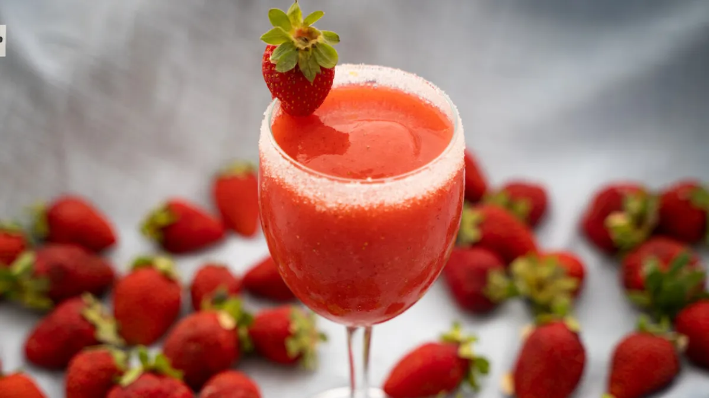

Smoothie de Frutilla

El smoothie de frutilla es una bebida cremosa, nutritiva y refrescante. Preparado con frutillas frescas, yogur y un toque de miel, es ideal como desayuno, colación o para disfrutar en cualquier momento del día.

El smoothie de frutilla es una bebida cremosa, nutritiva y refrescante. Preparado con frutillas frescas, yogur y un toque de miel, es ideal como desayuno, colación o para disfrutar en cualquier momento del día.